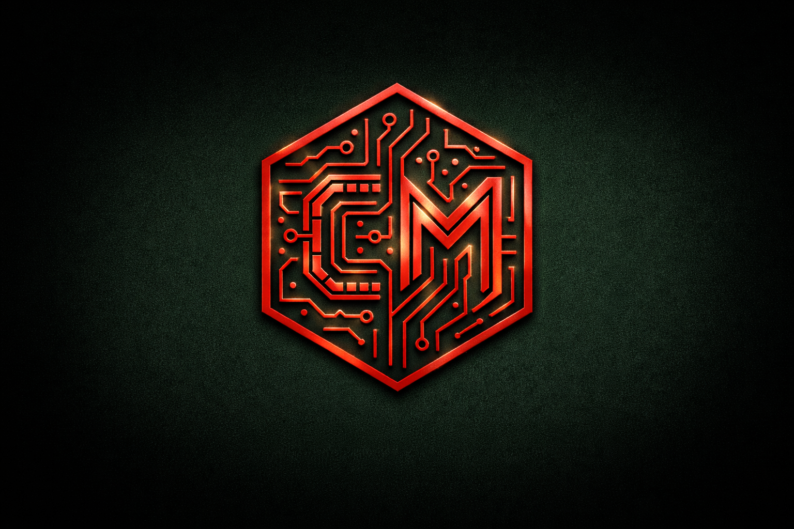

// cybersecurity · cloud infrastructure · digital forensics
Senior engineer with 10+ years across cloud infrastructure and cybersecurity. Currently providing Tier 2 VoIP & cloud support at Sangoma — specializing in packet-level analysis, TLS/SSL troubleshooting, Linux log forensics, and IAM. Former infrastructure engineer at Dátil, where I architected AWS environments, designed PCI-DSS compliant systems, and built CI/CD pipelines. Master's in Cybersecurity (Cum Laude) · ISO/IEC 27001:2022 Lead Auditor · Open to US remote roles.
Memory forensics analysis using the Volatility framework to investigate RAM artifacts.
forensicsSecurity event monitoring and alerting setup using Graylog SIEM platform.
siem · monitoringSecurity audit methodology and findings for mobile applications.
mobile · pentestNLP-based sentiment analysis pipeline applied to Twitter/X data streams.
nlp · data scienceReverse engineering notes, scripts, and binary analysis exercises.
re · malwareLog parsing utility for Acrobits VoIP application data investigation.
parser · logs